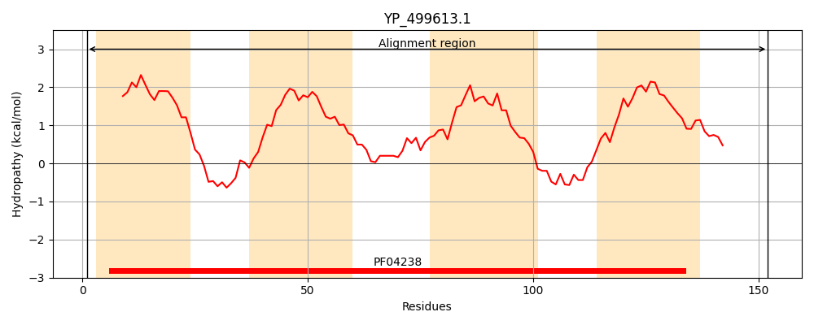
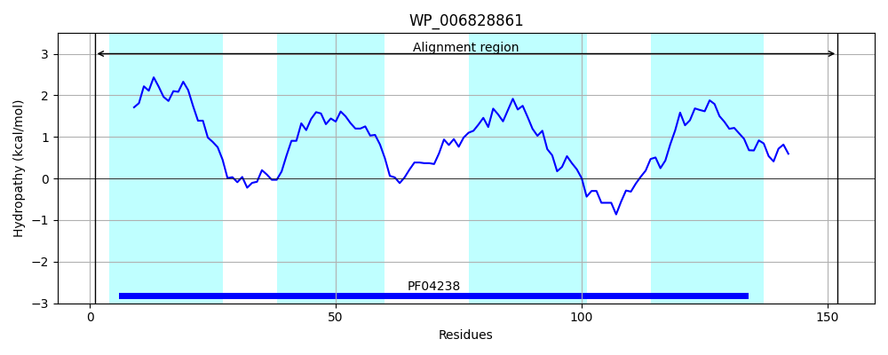
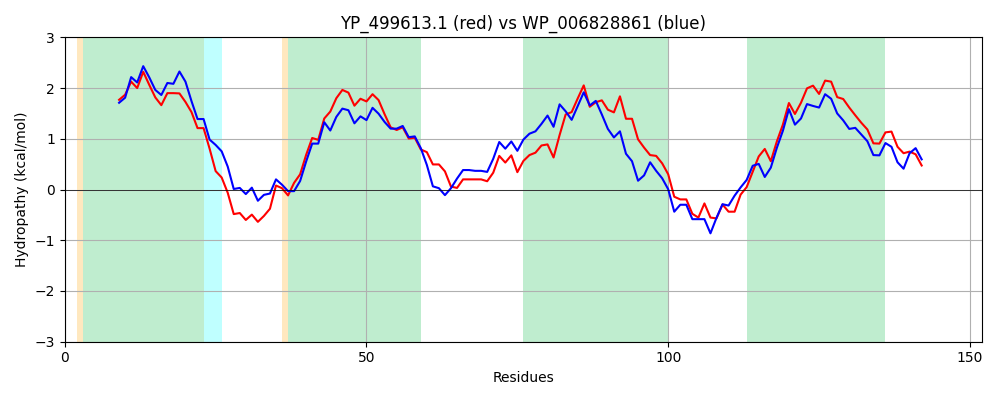

Hit Accession: WP_006828861
Hit TCID: 9.B.300.1.3
Hit Description: gnl|BL_ORD_ID|20748 gnl|TC-DB|WP_006828861.1|9.B.300.1.3 DUF420 domain-containing protein [Planococcus antarcticus]
Mach Len: 152
e:0.000000
Query TMS Count : 4
Hit TMS Count: 4
TMS-Overlap Score: 4.650000
Predicted Substrates:None
BLAST Alignment:
Score: 501 , Bit scores: 197 bits, E-value: 5.1e-66, Alignment length: 152, Percentage identity: 61
Query: 1 MGVPILPTISTTCIVISAILIAIGWRLIWKREINKHKNVMLAAAVFALTFFLIYASRTIFIGNTAFGGPASIKKYYTIFLFFHINLATIGGILGLVQIITAFKDKYNVHRKFGPFASVIWFCTAITGVAVYLLLYVLYPGGETTSLIKATFG 152
M +P+LPTIST IV+SAIL+AIGW L+ +R+I HK VM+ A ALTFF+IY SRTIF+GNTAFGGP +K +YT+FL FHI LAT GGI+GL+ I +K++ HRK GP S++WF TAITGV VY+LLYV Y GG TTS+ KA G
Sbjct: 1 MNLPLLPTISTFFIVLSAILVAIGWNLVLRRKIEAHKKVMVGAGAAALTFFIIYMSRTIFVGNTAFGGPDELKIFYTVFLIFHITLATTGGIMGLITIYWGWKNQLVKHRKIGPITSIVWFSTAITGVMVYMLLYVFYEGGHTTSVFKAILG 152 | Protein Hydropathy Plots: |
|---|
|  |  |
Pairwise Alignment-Hydropathy Plot:
|
|---|
|  |